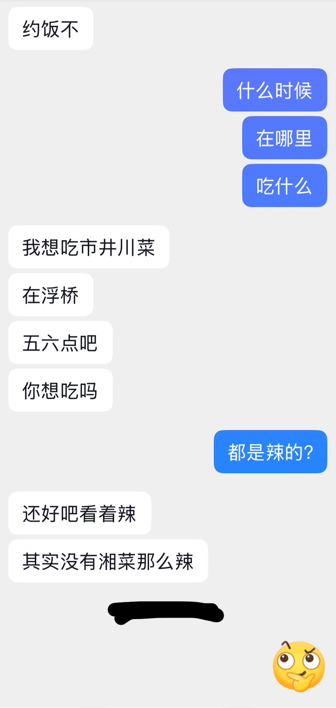
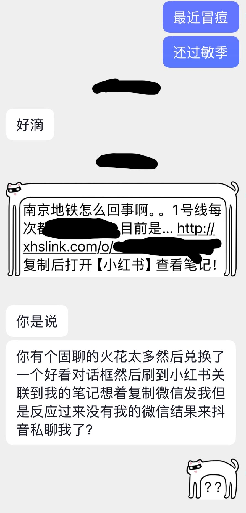

mdL
@buandeye6
@Kittemeow_tea2s 我是因为控制饮食，在南京好久没放开了吃了，落泪


糯咪
@Kittemeow_tea2s
🎵上的一个男的，因为还没见过面在观望所以没有加v，那天找我吃饭我不想吃辣菜可能就默认我拒绝了他，我没察觉不对。今天刷到一个帖还想着和他的职业相关发给他，结果很莫名其妙地发了一堆话，直接拉黑…我不知道是不是我太t人了，我觉得我只是表达了我不太爱吃辣不代表不愿意和他吃。 https://t.co/905MSbezGW